他们肩负了非常大的使命, 他们除了帮忙把野生大象搬迁至更适合他们的新家园之外, 他们还会负责照顾那些受重伤或者是已经丧失在野外生存能力的大象们。
了解海龟保护和生存。观看这些濒危物种产蛋、进食和孵蛋。了解在自然栖息地生活的不同龟类，甚至还有机会将刚孵化的小龟放生大海。

可以近距离看到 " 大只 " 的蝴蝶之外，这里的园艺设计，比起吉隆坡的蝴蝶公园还要棒！虽说蝴蝶的种类没有其他的蝴蝶公园来得多，但至少可以静静地观察。
全称:彭亨繁荣之邦（Pahang Darul Makmur）
马来西亚十三个州之一，位于马来西亚半岛东海岸，是西马土地面积最大的州属，共35,964平方公里。东面是南中国海，与柔佛州、森美兰州、雪兰莪州、霹雳州、吉兰丹州、登嘉楼州毗邻。
彭亨州由高山及海岸所组成。约80%土地为原始森林，大马主干山脉蒂迪旺沙山脉穿越此州，马来西亚半岛最高山峰大汉山也位于本州北部。
本州首府是关丹市州（Bandaraya Kuantan），皇城位于北根市（Bandar Pekan）。州最高统治者为苏丹阿都拉（Al-Sultan Abdullah Ri'ayatuddin Al-Mustafa Billah Shah ibni Almarhum Sultan Haji Ahmad Shah Al-Musta'in Billah），也是现任最高元首。
州徽和州旗:
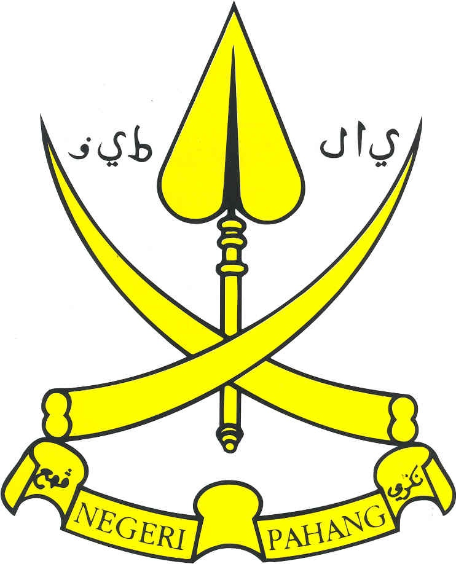万历年间，柔佛国副王子娶彭亨王女，婚前，柔佛国副王送王子到彭亨，彭亨王设宴款待，亲戚毕会。彭亨王妹婿是婆罗国王子，当时也在座，举杯向柔佛国副王道贺。当时婆罗国王子手指上带着一颗大珍珠，闪闪发光。柔佛国副王愿出重金换取大珠，但婆罗国王子不肯割爱，柔佛国副王恼羞成怒，归国后立刻发兵来攻打彭亨。彭亨人大出所料，不战自溃，彭亨王和婆罗王子逃奔金山。彭亨王妃的哥哥是浡泥国王，闻讯率兵来援救。柔佛国副王在彭亨大肆焚掠而去。当时，彭亨国中鬼哭三日，人民半死。浡泥王将妹妹和彭亨王迎回浡泥，彭亨王命长子摄国。后来彭亨王复位，彭亨王次子素来凶悍，毒杀父王，并弑兄自立为彭亨王。
关于彭亨州名字的由来，彭亨(Pahang)是马来半岛上最大的州，而在马六甲出现之前，所有马来半岛南部的地区，在一些古记录中曾被称为古彭亨(Pahang Tua)。
了解更多...| 自然景点 | |
|---|---|
| 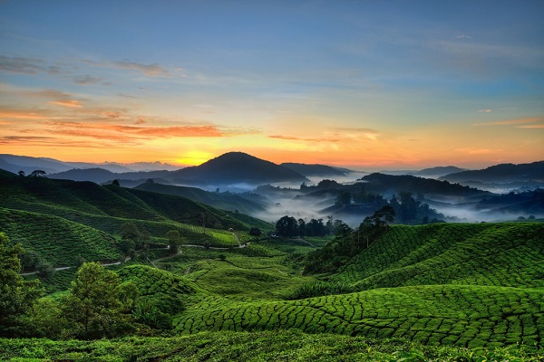 | 金马伦高原 马来西亚最大的高原度假胜地，盛产茶叶，也是马来西亚最大的温带蔬菜与花朵种植区。 |
| 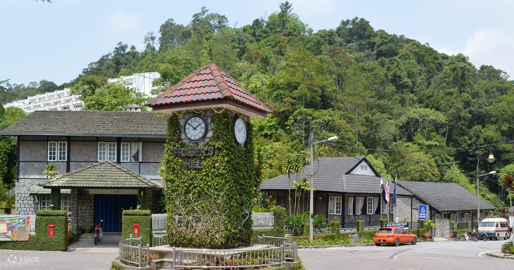 | 福隆港 以看鸟闻名的高原度假胜地。 |
| 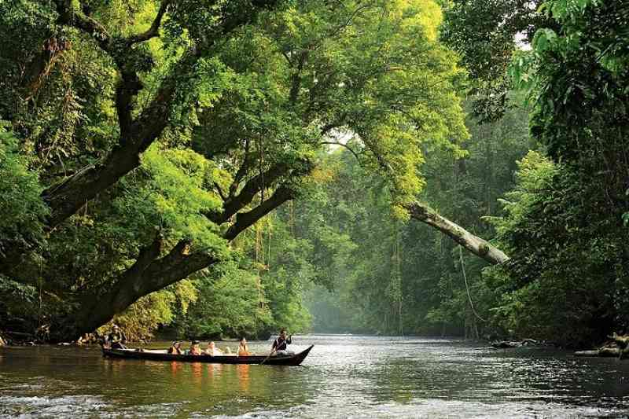 | 大汉山国家公园 全马最大的原始森林公园，大马半岛最高峰大汉山座落于此。 |
| 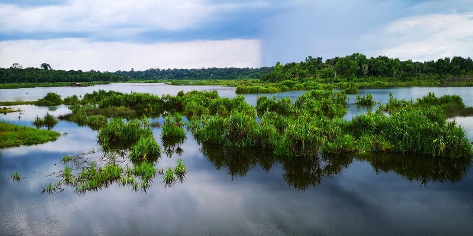 | 百乐湖 大马最大的自然湖。 |
| 旅游胜地 | |
| 云顶高原 现代化的度假胜地，有室内外的主题公园，有集饭店、表演厅及酒廊于一体的赌场大厦CASINO COMPLEX。 | |
| 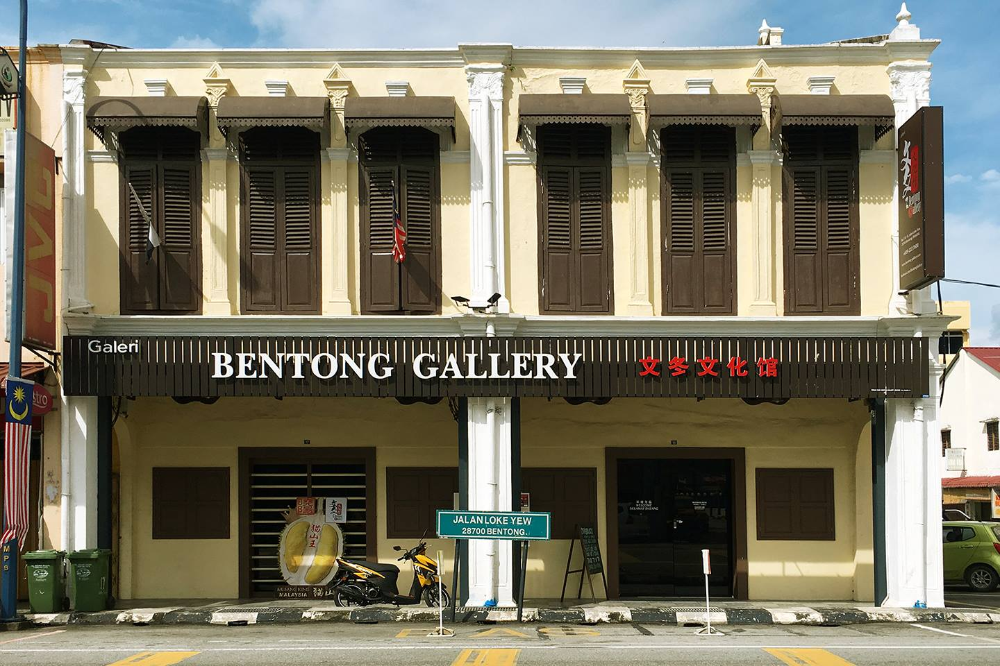 | 文冬文化馆 Bentong Gallery 曾是文冬的开埠功臣陆佑先生所成立的东顺公司的办公室所在地，文化馆分为3个展览厅里头有着许多珍贵的文献以及历史资料，让人们可以完整地了解文冬的历史经历。 |
| 美食 | |
|---|---|
| 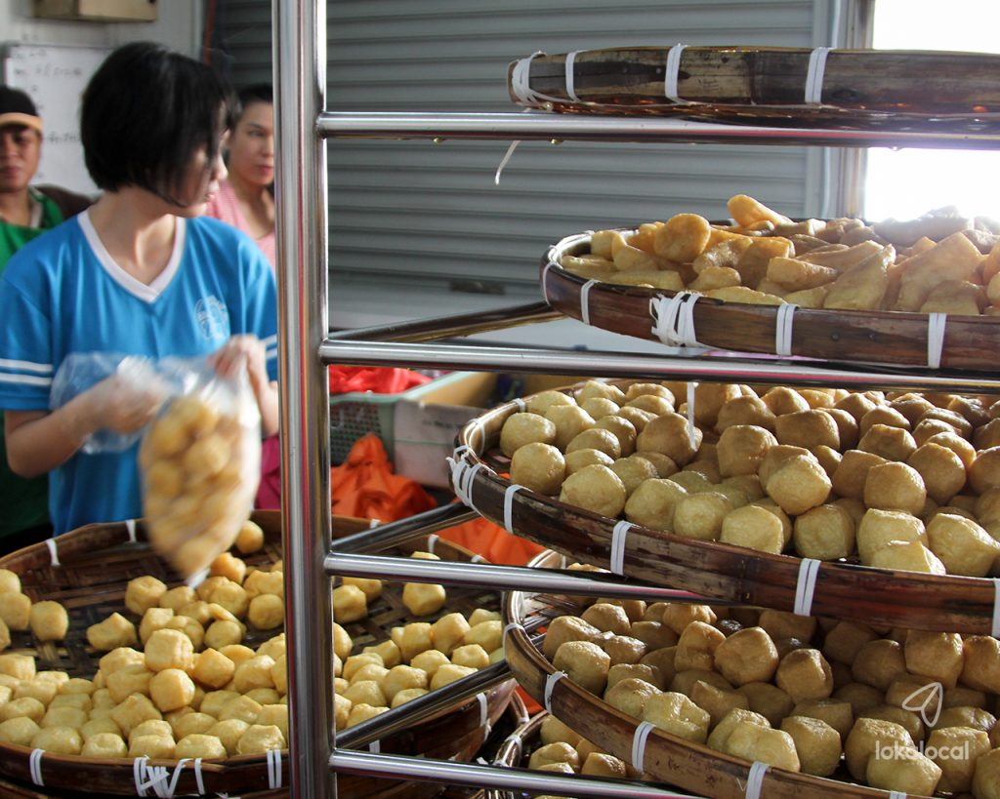 | 豆腐制食品 彭亨文东是以制作豆腐食品而闻名的，这里的豆腐卜不但都非常新鲜而且味道超正！这里的豆腐制作工厂可以参观有趣的制作豆腐过程和尝试新鲜制作的豆腐食品。 |
| 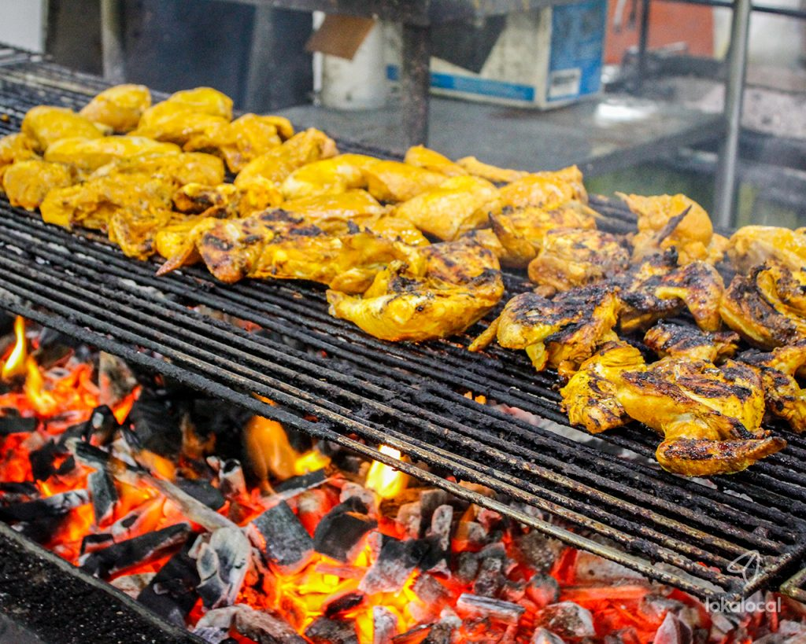 | 印尼烤鸡 印尼烤鸡 (percik chicken)以各种酱料如，辣椒、蒜汁、薑汁和椰奶来腌制的鸡肉将烤至金黄色再盛起来搭配竹筒饭一起吃。 |
| 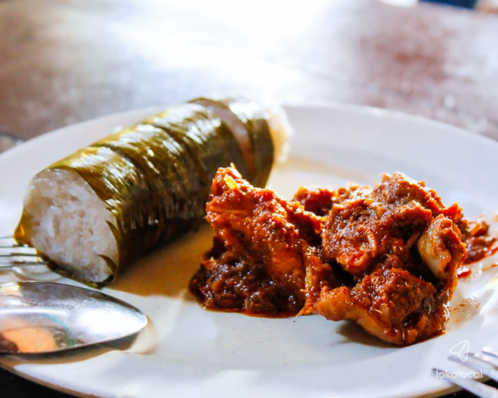 | 竹筒饭搭配仁当 竹筒饭是马来友族的传统小吃，以蕉叶围绕的糯米饭蒸好后再搭配咖哩、仁当(Rendang)或咖椰(Kaya)等不同的醬料享用。软软又香甜的口感特别好吃。 |
| 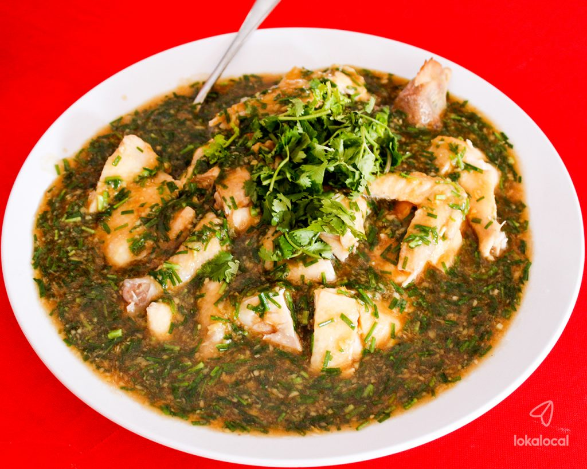 | 广西三宝 广西三宝是以味念鸡，扣肉和釀料合成，这道菜吃起来不会太辣，味道浓郁，肉实甜美。 |
| 野生动物区 | |
|---|---|
| 瓜拉甘达大象保育中心 Kuala Gandah Elephant Sanctuary 他们肩负了非常大的使命, 他们除了帮忙把野生大象搬迁至更适合他们的新家园之外, 他们还会负责照顾那些受重伤或者是已经丧失在野外生存能力的大象们。 |
| 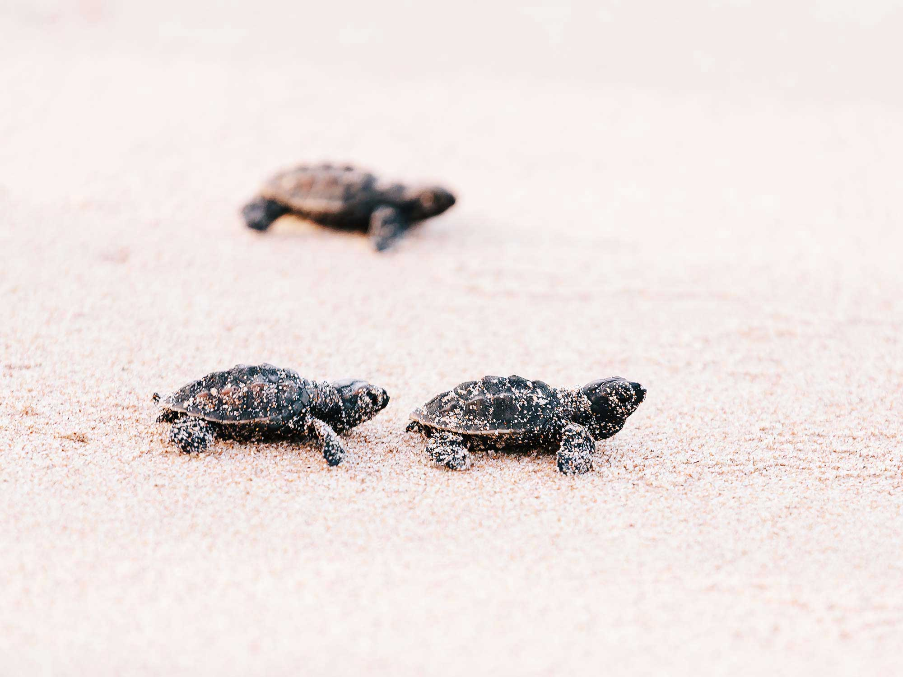 | 珍拉丁海龟保育中心 Cherating Turtle Sanctuar 了解海龟保护和生存。观看这些濒危物种产蛋、进食和孵蛋。了解在自然栖息地生活的不同龟类，甚至还有机会将刚孵化的小龟放生大海。 |
| 金马伦蝴蝶昆虫 Cameron Highlands Butterfly Garden 可以近距离看到 " 大只 " 的蝴蝶之外，这里的园艺设计，比起吉隆坡的蝴蝶公园还要棒！虽说蝴蝶的种类没有其他的蝴蝶公园来得多，但至少可以静静地观察。 |